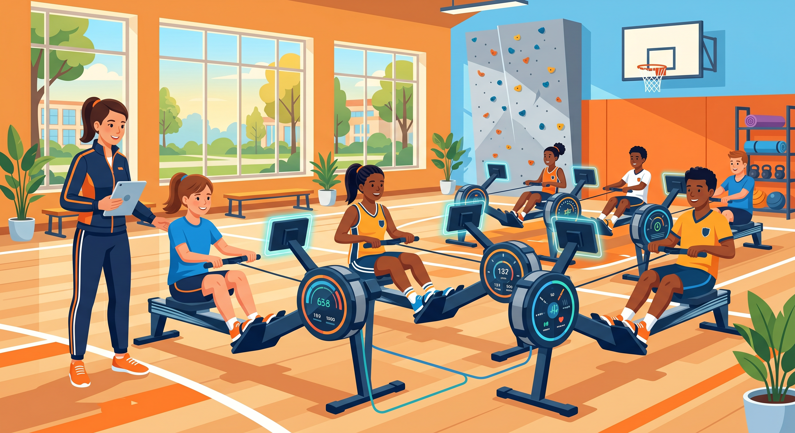

学期述职报告 · 2026 春季学期
蜂鸟片区第一责任人 靳鑫雨
述职框架
主线：看清问题 → 找准原因 → 给出方法 → 拿出结果，让数据自己说话。
片区整体情况
隶属张继瑞老师直管，共 5 所校区（4 小学 + 1 初中）：27 / 28 / 32 / 33 / 56。
张可欣老师任机动岗，支援各校区。本学期师资配置偏高——这份支持，我转化成了对结果的更高要求。
日常运营复盘 · 目标完成度
采用 A/B 组教学的 32、33 校区完成度显著领先——这是教学组织方式带来的效率差异，也是下学期推广经验的依据。
短板归因
学期中途换主教，节奏需磨合；阳光跑挤占课时、学情偏弱。赛事活动停课累计影响 113 节。
本质是"新开校"，上学期仅 3 节课。跨校 PK、接力赛、测试挤占累计影响 119 节，师生数据意识偏弱。
典型"出勤困局"：正常上课单节达标率 90%+，问题在人到不齐——初三离校合班、PK 赛占用近一个月。
专业判断：28 校区的问题本质不是"教得差"，而是"出勤这个前置条件没解决"。
标杆经验

已在片区周例会分享，其他校区应用后功率和里程可见提升。
运动舱 & 体测成绩分析
延续"每节课运动数据实时记录"机制，周例会精准提醒未达标校区。
新版教学日报要求填写单节里程与功率，这个动作本身就在倒逼老师重视课堂数据。
教研落地
聚焦徒手与设备练习穿插、开放式 / 小空间 / AB 组场景实操，吸收其他片区优秀动作及时迭代。
从体测优良率看运用效果不错。
不足：过程有落实，但闭环反馈偏少——这是下学期要补的管理动作。
安全红线
27 校区设备链条断裂、学生头部磕碰暖气片，所幸无大碍。
链条断裂或许难以完全避免，但规范的两周一检本可提前把风险筛出来——这暴露了检查环节的敷衍。
赛事与外宣
典型是 56 校区——校方支持，却只发 1 篇、没办现场赛。前期摸底不够、监督不坚决。外宣是放大器，下学期主动经营。
管理实践 ① · 因材施教
最棘手的是阳光跑校区——实际上课只剩约 30 分钟。
反复试验后摸索出"及时完成规定里程 + 各环节倒计时"打法，在 32/33 验证有效后推广全片区，功率里程普遍提升。
方法论要跟着学情走，而不是一套打法用到底。
管理实践 ② · 因人而异
给舞台。新人帮扶、教研会组织交给她，放大她的价值。
给通道。负责检查验收、每日反馈，例会多引导表达，工作外多沟通。
给推力。公开场合善意点名，形成同伴监督；语气不硬、多用幽默。素材质量、信息同步明显改善。
管理实践 ③ · 带新人 + 自我成长
第一次带新人佟江烁老师：不再一味输出，让他自学清单、找答案、汇总问题，再一对一指导。
建"我 + 芦老师 + 佟老师"三人群，解决问题、锻炼芦老师、把控方向。
我自己的升级：从事必躬亲 →「明确要求 + 卡时间节点 + 过程提醒 + 统一验收」的授权闭环。
总结与展望
以上是我的述职，请各位老师批评指正，谢谢。